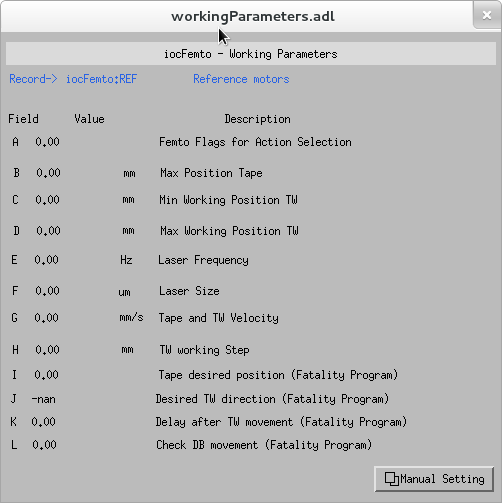

He heard quiet steps behind him. That didn't bode well. Who could be following him this late at night and in this deadbeat part of town? And at this particular moment, just after he pulled off the big time and was making off with the greenbacks. Was there another crook who'd had the same idea, and was now watching him and waiting for a chance to grab the fruit of his labor? Or did the steps behind him mean that one of many law officers in town was on to him and just waiting to pounce and snap those cuffs on his wrists? He nervously looked all around. Suddenly he saw the alley. Like lightning he darted off to the left and disappeared between the two warehouses almost falling over the trash can lying in the middle of the sidewalk. He tried to nervously tap his way along in the inky darkness and suddenly stiffened: it was a dead-end, he would have to go back the way he had come. The steps got louder and louder, he saw the black outline of a figure coming around the corner. Is this the end of the line? he thought pressing himself back against the wall trying to make himself invisible in the dark, was all that planning and energy wasted? He was dripping with sweat now, cold and wet, he could smell the fear coming off his clothes. Suddenly next to him, with a barely noticeable squeak, a door swung quietly to and fro in the night's breeze. Could this be the haven he'd prayed for? Slowly he slid toward the door, pressing himself more and more into the wall, into the dark, away from his enemy. Would this door save his hide?
 He heard quiet steps behind him. That didn't bode well. Who could be following him this late at night and in this deadbeat part of town? And at this particular moment, just after he pulled off the big time and was making off with the greenbacks. Was there another crook who'd had the same idea, and was now watching him and waiting for a chance to grab the fruit of his labor? Or did the steps behind him mean that one of many law officers in town was on to him and just waiting to pounce and snap those cuffs on his wrists? He nervously looked all around. Suddenly he saw the alley. Like lightning he darted off to the left and disappeared between the two warehouses almost falling over the trash can lying in the middle of the sidewalk. He tried to nervously tap his way along in the inky darkness and suddenly stiffened: it was a dead-end, he would have to go back the way he had come. The steps got louder and louder, he saw the black outline of a figure coming around the corner. Is this the end of the line? he thought pressing himself back against the wall trying to make himself invisible in the dark, was all that planning and energy wasted? He was dripping with sweat now, cold and wet, he could smell the fear coming off his clothes. Suddenly next to him, with a barely noticeable squeak, a door swung quietly to and fro in the night's breeze. Could this be the haven he'd prayed for? Slowly he slid toward the door, pressing himself more and more into the wall, into the dark, away from his enemy. Would this door save his hide?
He heard quiet steps behind him. That didn't bode well. Who could be following him this late at night and in this deadbeat part of town? And at this particular moment, just after he pulled off the big time and was making off with the greenbacks. Was there another crook who'd had the same idea, and was now watching him and waiting for a chance to grab the fruit of his labor? Or did the steps behind him mean that one of many law officers in town was on to him and just waiting to pounce and snap those cuffs on his wrists? He nervously looked all around. Suddenly he saw the alley. Like lightning he darted off to the left and disappeared between the two warehouses almost falling over the trash can lying in the middle of the sidewalk. He tried to nervously tap his way along in the inky darkness and suddenly stiffened: it was a dead-end, he would have to go back the way he had come. The steps got louder and louder, he saw the black outline of a figure coming around the corner. Is this the end of the line? he thought pressing himself back against the wall trying to make himself invisible in the dark, was all that planning and energy wasted? He was dripping with sweat now, cold and wet, he could smell the fear coming off his clothes. Suddenly next to him, with a barely noticeable squeak, a door swung quietly to and fro in the night's breeze. Could this be the haven he'd prayed for? Slowly he slid toward the door, pressing himself more and more into the wall, into the dark, away from his enemy. Would this door save his hide?
He heard quiet steps behind him. That didn't bode well. Who could be following him this late at night and in this deadbeat part of town? And at this particular moment, just after he pulled off the big time and was making off with the greenbacks. Was there another crook who'd had the same idea, and was now watching him and waiting for a chance to grab the fruit of his labor? Or did the steps behind him mean that one of many law officers in town was on to him and just waiting to pounce and snap those cuffs on his wrists? He nervously looked all around. Suddenly he saw the alley. Like lightning he darted off to the left and disappeared between the two warehouses almost falling over the trash can lying in the middle of the sidewalk. He tried to nervously tap his way along in the inky darkness and suddenly stiffened: it was a dead-end, he would have to go back the way he had come. The steps got louder and louder, he saw the black outline of a figure coming around the corner. Is this the end of the line? he thought pressing himself back against the wall trying to make himself invisible in the dark, was all that planning and energy wasted? He was dripping with sweat now, cold and wet, he could smell the fear coming off his clothes. Suddenly next to him, with a barely noticeable squeak, a door swung quietly to and fro in the night's breeze. Could this be the haven he'd prayed for? Slowly he slid toward the door, pressing himself more and more into the wall, into the dark, away from his enemy. Would this door save his hide?
dsfsdjfçlkjsdçlf
sfijsadçlkfjsçaldkjfçsaldkjfçsadlkjfçlsadkjf çlkjsd flksdj fçlksdj flksd jfçlskd jfçsa dfjlçk sdfj sdlkfj sdlçkfj sdçlkf sdlkf sdfj sçdlkfj sçlkdf sd fjçlksd jfçlksd jfçlkas dfjçlk sdjfl skçdfj sldkfj çsldkfj çsdlka jfçlsd jfçlksd jfçklsd fjçlksd jfçlksdj fçlksjda f.
{kind=link}